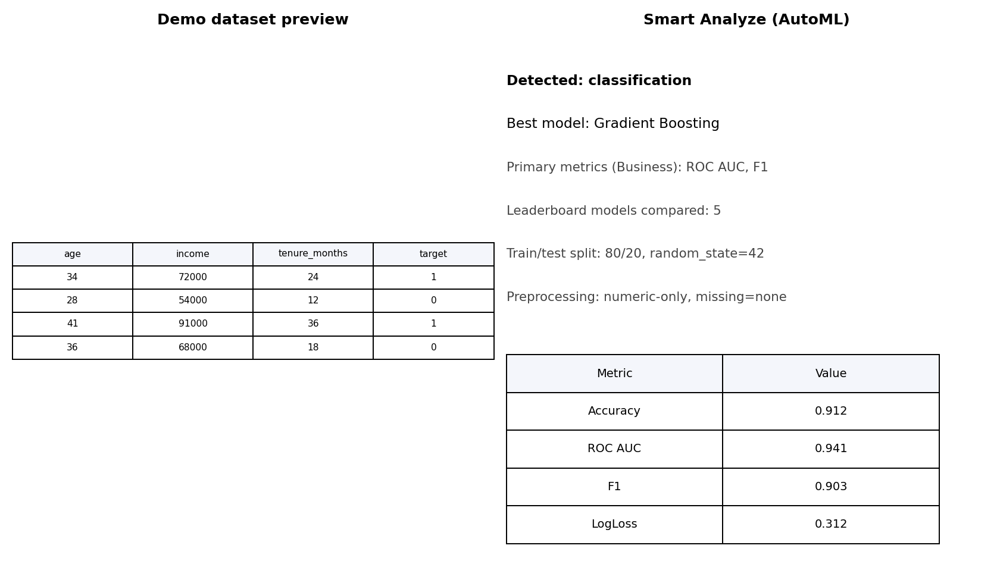
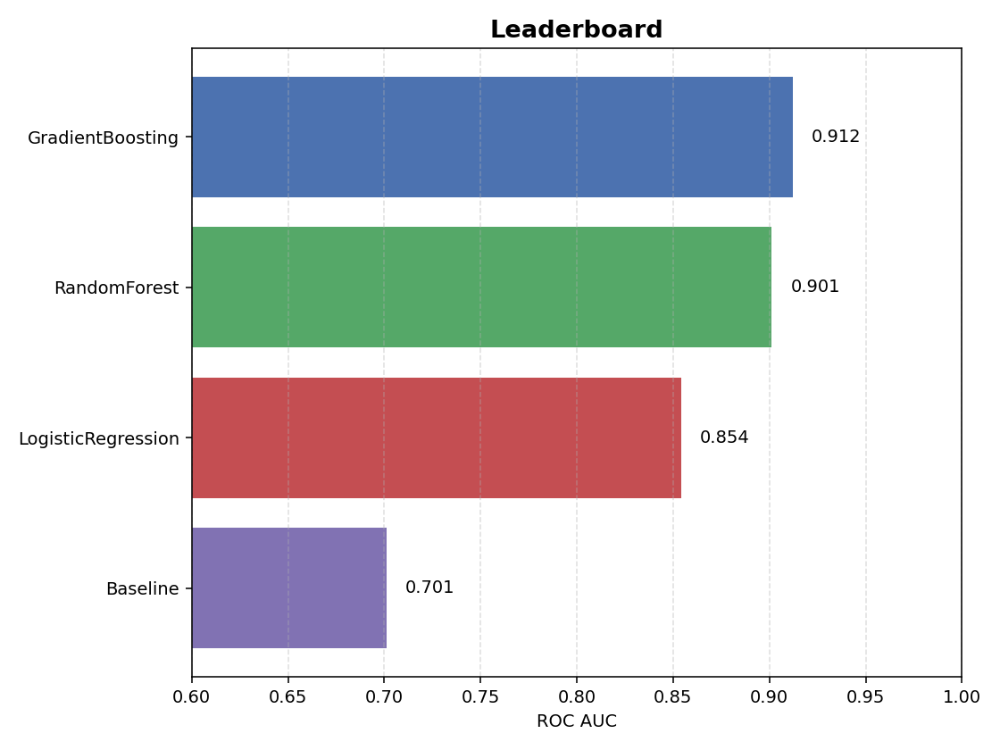
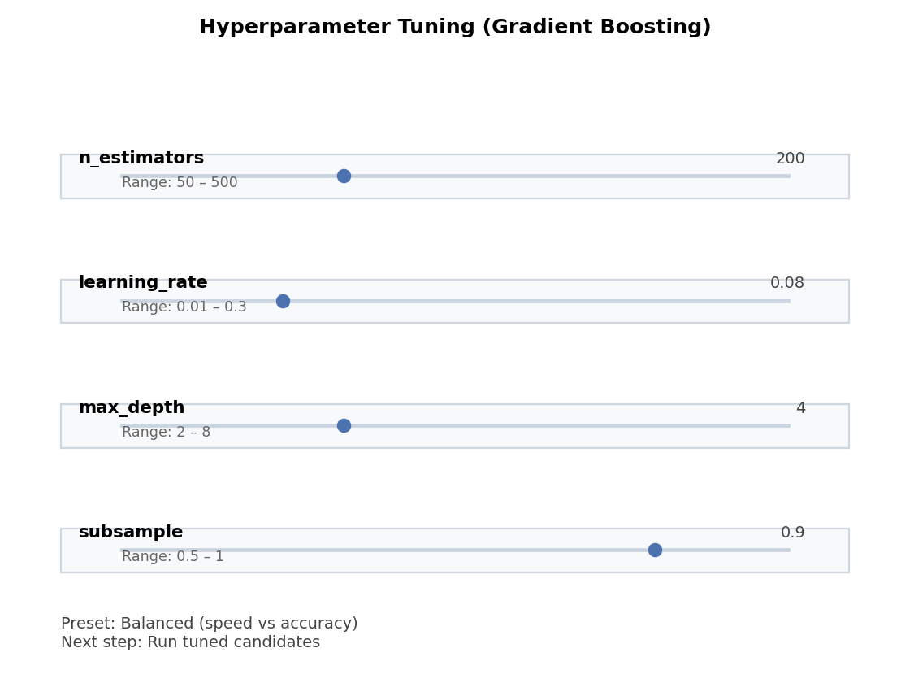
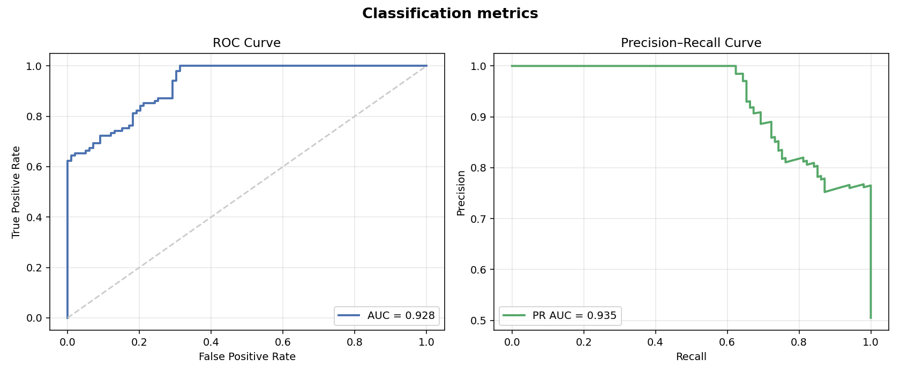

User Guide
Modes
- Basic: Minimal controls (load CSV, choose target, domain preset, Smart Analyze, results, What I did).
- Expert: Full controls for model selection, preprocessing, parameter dialogs, tuning, leaderboard, explainability, scenario testing.
Smart Analyze (AutoML)
- Load CSV or demo dataset.
- Choose target column (what you want to predict) and optional features.
- Click Smart Analyze to auto-detect problem type (regression/classification; time-series when a date column is present) and run AutoML (FLAML + fallbacks) to pick a model.
- Review Summary, Leaderboard, What I did, Data quality, Explain, and Model comparison tabs.
Details:
- Detection: inspects the target to decide regression vs classification; suggests forecasting when a time column is present.
- Backend: FLAML bundled by default; falls back to built-in models.
- Leaderboard: shows candidate models, metrics, and train times; you can set another model as active.
- Tuning: use Tune… (Fast/Balanced/Thorough) for RF/GB models in Expert mode.
- Demo tips: the bundled demo CSV includes both a regression target (target) and a binary target (target_class) so you can try both flows.
- Walkthrough: examples/automl_smart_analyze_quickstart.md.
- Screenshots:
-

-
-
Domain Presets & Coach Bar
- Domains: Generic, Finance, Science, Business.
- Coach bar provides step guidance and warnings; domain hints adapt phrasing and metric emphasis.
- Troubleshooting: see
docs/troubleshooting.mdfor common errors (leakage, imbalance, missing values) and fixes.
Expert Controls
- Models: OLS/WLS/GLS/RLM/Rolling LS, RandomForest/GradientBoosting (reg/class), KMeans, Gaussian/Exponential fits.
- Preprocessing: missing-value strategy, standardization, numeric filtering, date parsing/derived features (where used).
- Tuning: preset-based hyperparameter search for RF/GBM; leaderboard to pick the best.
- Explain: global/local explanations, feature importance, partial dependence.
- Scenario testing: adjust top feature values and see predicted changes.
Classical models
- OLS: plain linear regression when errors are homoscedastic and independent.
- WLS: weighted least squares when you have a weights column (add the weights column to X and pick WLS via Expert mode).
- GLS: generalized least squares when you have known correlation/variance structure.
- RLM: robust linear model to down-weight outliers.
- Rolling LS: moving-window OLS for time-ordered data (no train/test split).
- KMeans: unsupervised clustering; set
kin the KMeans dialog.
Example workflows:
- Run WLS: Load CSV → select features + target + weights column in X → Expert mode → choose WLS → Run selected model.
- KMeans: Load CSV → select numeric features → Expert mode → choose KMeans → open dialog to set clusters → Run selected model → inspect cluster centers.
- Gradient Boosting: For regression or classification, choose Gradient Boosting in Expert mode; see examples/regression_gradient_boosting_basic.md and examples/classification_business_roc_pr.md for step-by-step usage.
Advanced Linear Regression
- WLS vs GLS vs RLM vs Recursive/Rolling: choose WLS for heteroscedastic data with weights; GLS for correlated errors; RLM for outlier robustness; Recursive LS for online-style updates; Rolling LS for time-varying coefficients on ordered data.
- See the worked example:
examples/regression_advanced_ls.md.
Advanced Curve Fitting
- Gaussian: fits a bell-shaped peak (center/width) for one feature vs target.
- Exponential: fits growth/decay curves (rate + baseline).
- Use one feature at a time; select the feature and target, then choose Gaussian/Exponential fitting in Expert mode.
- Example walkthrough:
examples/curve_fitting_gaussian_exponential.md.
Clustering
- KMeans groups numeric rows into k clusters by minimizing within-cluster variance.
- Works best when features are scaled and clusters are roughly spherical.
- Try several k values (3–5) to see stable segments; centroids summarize each cluster.
- Example walkthrough:
examples/clustering_kmeans_basic.md.
Preprocessing & Encoding
- Numeric vs categorical detection is automatic; date columns can be parsed and expanded into year/month/weekday/quarter.
- Categorical encoding (Expert mode):
- One-hot (default, safe).
- Target encoding (advanced, supervised): maps categories to mean target; unseen categories → global mean.
- See
examples/preprocessing_dates_and_categoricals.mdfor a walkthrough.
Metrics & leaderboard
- Regression metrics: R², RMSE, MAE, MAPE (finance often highlights RMSE/MAPE; science highlights R²/RMSE).
- Classification metrics: accuracy, balanced accuracy, macro/micro F1, ROC AUC (if probabilities), PR AUC (binary).
- Leaderboard: Smart Analyze compares candidate models and highlights the best using the primary metric for the current domain. The Model comparison tab lists all runs and can show a metric bar chart; click “Set as active model” to use a different candidate.
- Classification walkthroughs: see
examples/classification_binary_basic.md(binary),examples/classification_multiclass_basic.md(multiclass), andexamples/classification_business_roc_pr.md(business ROC/PR focus).
Domain → Primary metrics:
| Domain preset | Primary metrics |
|---|---|
| Generic | Accuracy, R² |
| Business | ROC AUC, PR AUC, F1 |
| Finance | MAPE, RMSE |
| Science | Balanced accuracy, F1 |
Notes on ROC/PR:
- ROC AUC: summarizes true positive vs false positive tradeoff; good overall ranking metric when probabilities are available.
- PR AUC: focuses on precision/recall; especially informative on imbalanced classes (e.g., churn/default).
- Business preset emphasizes ROC/PR; see examples/classification_business_roc_pr.md.

Visualizations & saving plots
- Available visuals: regression and residual plots, confusion matrices, tree diagrams, curve fits, feature importance, forecast plots.
- Saving: use Save plot… in the main toolbar/results area to export the last shown figure as PNG/PDF.
- Examples:
- Regression/residuals:
examples/visualizations_regression_and_residuals.md - Confusion/tree:
examples/visualizations_confusion_and_trees.md - Forecast plot notes:
examples/forecasting_basic.md(forecast plot interpretation)
Hyperparameter tuning (Expert)
Guided presets for RandomForest/GradientBoosting: 1. Choose model (RF/GB) in Expert mode. 2. Click Tune… → pick fast / balanced / thorough. 3. Tuning runs RandomizedSearchCV; a popup shows before/after metrics. 4. The tuned model replaces the current estimator and is added to the leaderboard/history.
Tips: - Use fast for quick feedback, thorough for better quality on small/medium datasets. - Ensure X/Y selection is numeric/encoded before tuning.
Domain recipes
- Domain presets pick defaults and primary metrics for common use-cases.
- See
docs/recipes.mdfor ready-made flows: - Business: churn classification.
- Finance: revenue forecasting with ETS/ARIMA.
- Science: calibration with Gaussian/Exponential fits.
- Segmentation: KMeans clustering.